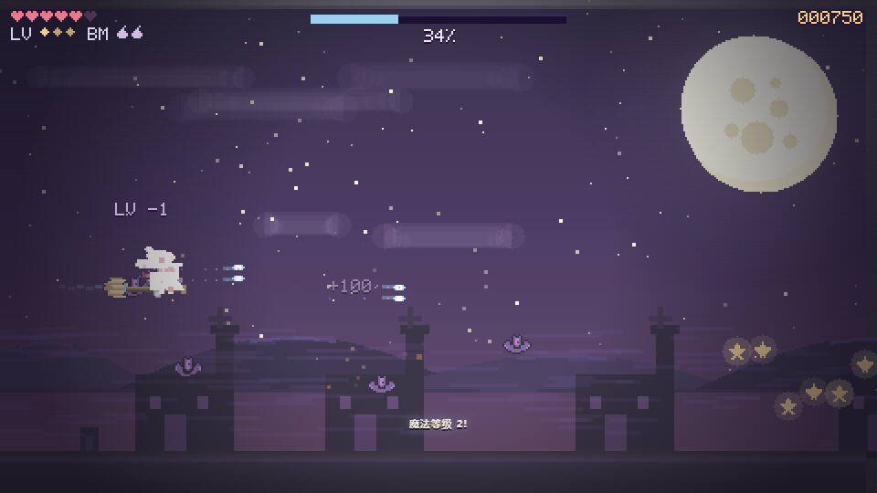
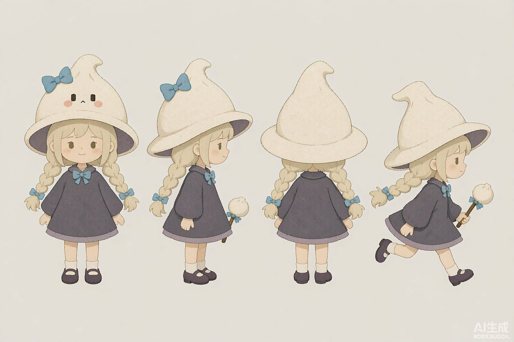

原型设计 · 教学整理版
小魔女夜巡 原型策划初稿
按本期口播中的玩法方向重新整理，供讲解与首轮试做使用。
1 游戏概念
一款单人横版射击闯关游戏。玩家控制骑扫帚的小魔女，在夜晚的湖边飞行，击败夜怪、收集微光、强化射击，最后打败关底首领，让村庄恢复安静。
第一版采用 H5 网页形式，先用像素图或简单图形做出一关能从开始玩到结束的原型，验证操作和战斗节奏。

早期试玩画面参考。用来说明夜间湖畔、横向飞行与连续射击的呈现方式；界面和数值以本稿的第一版方案为准。
2 玩家能做什么
- 在屏幕内上下左右飞行，调整位置，躲开怪物和敌弹。
- 向右连续发射魔法弹，击败前方的敌人。
- 收集击败怪物后掉落的微光，让普通射击逐渐变强。
- 暂停、继续，以及失败或通关后重新开始。
场景自动向前推进。湖面、房屋和石桥作为背景，保持飞行区域清楚可见。
3 基础规则
| 项目 | 第一版方案 |
|---|
| 桌面操作 | 方向键或 WASD 移动，按住空格或 J 射击。 |
| 触屏操作 | 左侧拖动控制飞行，战斗中自动射击，右上角暂停。 |
| 生命 | 开局 5 点；碰到怪物或敌弹扣 1 点，受伤后短暂无敌并闪烁提示。 |
| 收集成长 | 微光自动靠近并被回收；累计 10 颗升至二级、30 颗升至三级。 |
| 射击变化 | 一级单发；二级三发；三级保留三发并提高威力；升级时显示短提示。 |
| 通关 | 玩家存活，击败中首领与关底首领，完成短暂返程后进入通关结算。 |
| 失败与重开 | 生命归零后停止战斗，显示失败与重新开始按钮。重开回到起点，生命、成长、敌人和进度恢复初始状态。 |
成长门槛沿用早期微光方案的试做值，后续按实际回收速度和战斗体验调整。
4 一关的流程
开始界面 → 村口小怪 → 湖面鱼群 → 中首领
→ 桥下混合敌群 → 首领预警 → 关底首领 → 返程 → 通关结算
开场熟悉移动与射击，湖面敌群引导上下换线，中首领检验躲避与输出。桥下增加敌群组合，关底首领提供主要挑战，返程降低压力并收尾。
普通路线按编队顺序推进；首领战在击败后进入下一段。单关时长在试玩后调整，通关依据击败首领与完成返程判断。
敌人 · 素材 · 实现与验收
5 敌人怎么安排
| 敌人 | 行为与作用 |
|---|
| 编队小怪 | 从右侧进入，按直线或波浪路线飞行，练习瞄准和换线。 |
| 射击小怪 | 发射少量方向固定的敌弹，让玩家边攻击边躲避。 |
| 中首领 | 体型较大，上下移动，周期性发射扇形弹；击败后进入桥下段。 |
| 关底首领 | 发射扇形弹与瞄准弹，两种攻击交替；发射前有清楚的蓄力提示。 |
后续迭代的敌人形象参考。展示小怪与首领的轮廓和体量差异；首轮可以先用简单图形占位，行为按上表实现。
6 画面与界面
夜蓝和灰紫色的像素画面，配暖色窗光、月亮、湖面、石桥与小魔女。角色、敌弹和收集物用不同的形状与颜色区分。
第一版准备小魔女飞行、射击与受伤表现，小怪和两名首领，魔法弹、敌弹、微光，以及一组可滚动的湖畔背景。
界面显示生命、射击等级与微光成长进度；首领出现时显示血条。开始页交代目标和操作；结束页优先显示成功或失败，以及“再玩一次”。

后续主角设定参考。用多视图统一帽子、发型、服装与魔杖；第一版仍可先用像素图或简单图形验证玩法。
7 实现顺序
| 步骤 | 做出什么 | 怎么验收 |
|---|
| 1 飞行与射击 | 移动、连续射击和屏幕边界。 | 能边移动边射击，松开移动键能停住，角色不会飞出屏幕。 |
| 2 一组敌人 | 入场、命中、击败、受伤和生命。 | 能打中并击败敌人；敌人或敌弹碰到玩家会扣血。 |
| 3 收集与成长 | 微光掉落、回收和射击升级。 | 回收后成长增加，达到门槛时弹型或威力变化。 |
| 4 串起一关 | 背景、编队和两场首领战。 | 能按顺序玩到两场首领战，击败后正确进入下一段。 |
| 5 补齐状态 | 开始、暂停、失败、重开与通关。 | 能完整玩一局，失败后可以重来，暂停后能正常继续。 |
| 6 触屏试玩 | 拖动飞行、自动射击和按钮布局。 | 手机上能移动躲弹，手指与按钮不挡住主要攻击信息。 |
8 第一轮试玩要确认什么
- 玩家看得懂目标与操作，飞行、射击、受伤都有反馈。
- 小怪与首领按顺序出现，空档和攻击密度适合操作。
- 微光能回收，射击升级看得出来，重开后成长清零。
- 正常操作可以通关，生命归零能真实触发失败。
- 暂停冻结战斗，重开清空上一局的敌弹、道具和进度。
- 手机横屏显示正常，拖动飞行与自动射击同时工作。
整理说明：本稿依据本期口播与已讨论的玩法方向做了简化；沿用早期微光成长门槛，首领攻击与触屏操作按首轮原型收拢。它是本次整理的教学初稿，不是 2026 年 10 月 19 日 v1.0 存档的原文，也不代表上述功能已经完成或通过验收。